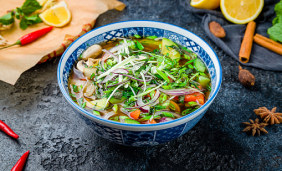
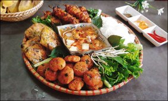
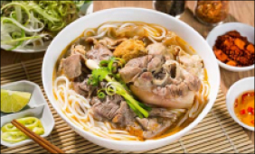
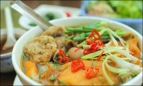
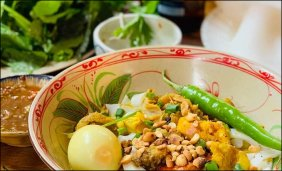
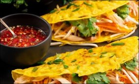
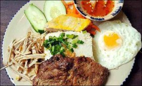
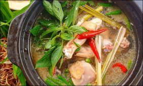
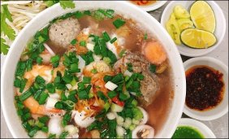

What to eat?
The place that brings you
many delicious dishes in 3 regions of Vietnam
Vietnamese food is known for its distinct use of fresh, fragrant and
aromatic flavours. There is a balance of sweet and sour, spicy and
cooling, fresh and salty flavours.
Introduction
Vietnam is an agricultural country belonging to the hot country, tropical monsoon region. In addition, the territory of Vietnam is divided into three distinct regions: North, Central and South, along with 54 ethnic groups. It is the characteristics of geography, culture, ethnicity, and climate that determine the specific characteristics of the cuisine of each region. Every region has a typical taste. That contributes to the richness and diversity of Vietnamese cuisine.
The Food Map
Pho Ha Noi
Pho Ha Noi is not only a separate dish of the land of Ha Thanh, but it is also imbued with Vietnamese culinary culture, which is loved by many domestic and foreign tourists.
Bun Bo Hue
Bun bo Hue is a Hue specialty and a treasured asset of the old capital's soil and inhabitants. The Asian Record Organization named Hue beef noodle soup to its list of 100 Asian culinary treasures.
Broken Rice
Broken rice is a specialty dish of the South, especially Saigon. The plate of rice usually has grilled ribs, skin, spring rolls, and eggs. The most quintessential part of broken rice is broken seeds.
Food
-
Ly Quoc Su Street, Ha Noi
Pho Ha Noi
The main components of Hanoi Pho are noodles, broth, and sliced beef or chicken. Traditional noodles for Hanoi Pho are made from rice flour, coated into thin sheets and cut into flat fibers like...
-
34 Hang Than, Ba Dinh
Bun Cha Ha Noi
Bun cha Hanoi those who have never heard of bun cha in Hanoi is a great regret, because it seems that any citizen of the capital is absolutely in love with this specialty dish. Bun cha that is eaten...
-
43 Nhat Le, Hue
Bun Bo Hue
Bun bo Hue is a Hue specialty and a treasured asset of the old capital's soil and inhabitants. The Asian Record Organization named Hue beef noodle soup to its list of 100 Asian culinary treasures...
-
66 Le Loi, Hai Phong
Hai Phong Fish Noodle
Fish vermicelli is known as a specialty dish of Hai Phong, because even the most fastidious diners are "knocked" by it from the first moment! The broth is a harmonious combination of tube bones and...
-
55 Tran Cao Van, Quang Nam
Quang Noodle
Quang noodle is a specialty dish from the Vietnamese provinces of Quang Nam and Da Nang. Quang noodles are often produced with metal braided dough, which will then be thinned...
-
84 Kim Long, Hue
Pancakes
The central pancakes are about the size of an adult's hand, with little content and usually just a little shrimp, or a few slices of pork, squid... add a little price. Pancakes should not be...
-
263 Tran Quang Khai, Q1
Broken Rice
Broken rice is a specialty dish of the South, especially Saigon. The plate of rice usually has grilled ribs, skin, spring rolls, and eggs. The most quintessential part of broken rice is broken seeds...
-
40 Vinh Khanh, Q4
Lau Mam
Mam hot pot is a typical dish of the western river region in general and of Can Tho cuisine in particular. The hot pot sauce is rich and fragrant with the characteristic flavor of fish sauce...
-
A65 Nguyen Trai, Q1
Nam Vang noodles
Nam Vang noodle soup is a noodle dish originating from Cambodia by Khmer processing, the main ingredient is dried noodle soup, the main broth is minced meat, pork intestines cooked with...